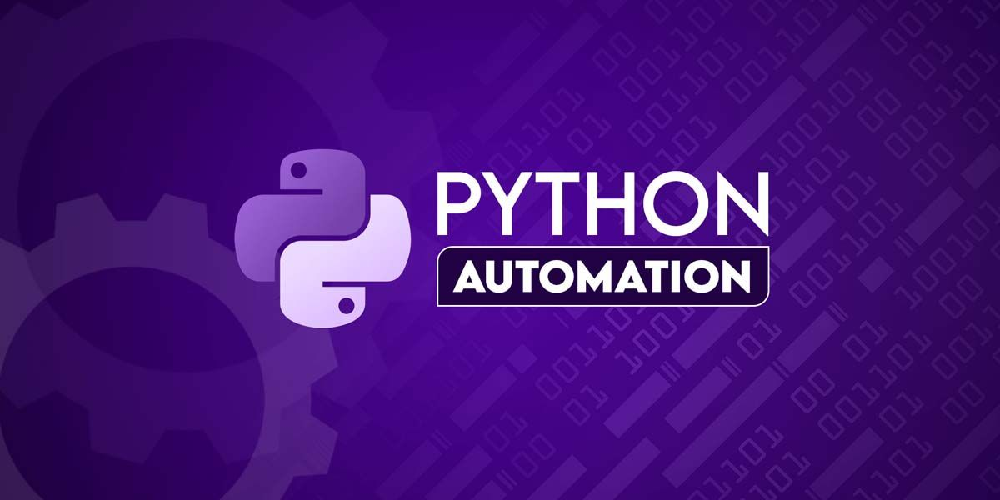

Python & Automation
Small tools and scripts that automate boring tasks using Python, APIs and basic logic. Focused on learning by building.

hsighiohgesgseighieghesiggggggggggggggggggggggggofhagheignvgheiogaslveighiegbasvklbe wigalbjgwugaiofnigbheioewoghwioghthwwo gwieghw
COLLEGE
I'm currently pursuing my Master's in Computer Applications (MCA), learning C, Python, web development and core CS subjects. I like taking those concepts and turning them into small projects instead of only writing theory.
This portfolio connects my college work with personal experiments – projects, notes, and ideas I'm building step by step.
ACHIEVEMENTS
2023
Joined my Master's in Computer Applications and began focusing seriously on programming, problem solving and building real projects.
2024
Worked on C programs, Python scripts and web pages that helped me understand how things work under the hood instead of just learning theory.
2024 – 2025
Explored tools like n8n, APIs and custom interfaces to automate tasks, integrate AI models and improve my workflow.
TECH
Small tools and scripts that automate boring tasks using Python, APIs and basic logic. Focused on learning by building.
Clean, responsive UIs using HTML and CSS. This portfolio itself is one of the main experiments.
Experiments with n8n, APIs and AI models to connect services, schedule tasks and create “set it and forget it” flows.